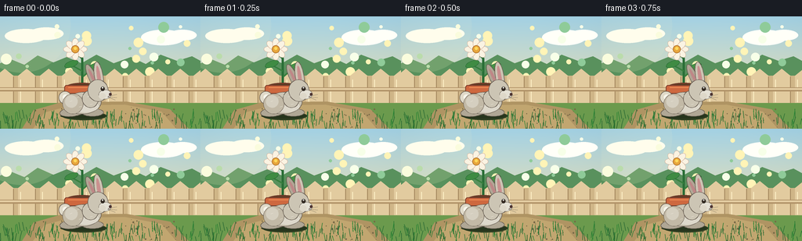
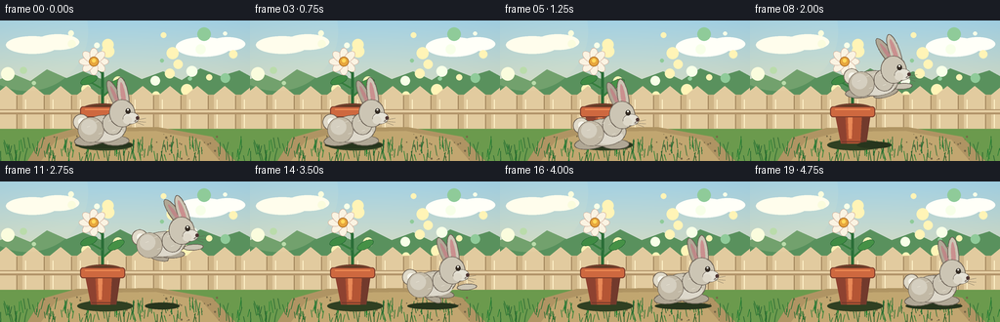

CODING AGENTS AS PIXEL WORLD MODELS
traex/GPT-5.6-Sol · dynamic_spatial_relationship_0021
点击播放 · 原生 RGB 像素
逐轮保存的候选
回放视频、检查图与代码变化。
每份候选均可单独播放。实际图片检查记录在下方工具轨迹中。
候选 01播放与检查图
点击播放 · 原生 RGB 像素


展开代码变化
--- 上一保存版本
+++ 本次保存版本
@@ -0,0 +1,223 @@
+from pathlib import Path
+import math
+import numpy as np
+from PIL import Image, ImageDraw, ImageFilter
+import artifact_io
+
+W,H,N = 256,144,20
+S=4
+rng=np.random.default_rng(21)
+
+def sc(v): return int(round(v*S))
+def box(b): return tuple(sc(v) for v in b)
+def pts(ps): return [(sc(x),sc(y)) for x,y in ps]
+
+def ellipse(d,b,fill,outline=None,width=1):
+ d.ellipse(box(b),fill=fill,outline=outline,width=sc(width) if outline else 1)
+def line(d,ps,fill,width=1): d.line(pts(ps),fill=fill,width=sc(width),joint='curve')
+def poly(d,ps,fill,outline=None,width=1): d.polygon(pts(ps),fill=fill)
+
+def rot_ellipse(d,cx,cy,rx,ry,ang,fill,outline=None,width=1):
+ a=math.radians(ang); ca,sa=math.cos(a),math.sin(a)
+ p=[]
+ for k in range(64):
+ q=2*math.pi*k/64
+ x=rx*math.cos(q); y=ry*math.sin(q)
+ p.append((cx+x*ca-y*sa,cy+x*sa+y*ca))
+ d.polygon(pts(p),fill=fill)
+ if outline: d.line(pts(p+[p[0]]),fill=outline,width=sc(width),joint='curve')
+
+def gradient_background():
+ h,w=H*S,W*S
+ y=np.arange(h)[:,None]
+ top=np.array([165,211,230.]); bottom=np.array([236,224,178.])
+ u=np.clip(y/(h*.75),0,1)[...,None]
+ arr=np.broadcast_to(top*(1-u)+bottom*u,(h,w,3)).copy()
+ # soft warm vignette
+ xx=np.arange(w)[None,:]
+ vig=((xx-w*.50)/(w*.75))**2+((y-h*.45)/(h*.95))**2
+ arr-=np.clip(vig[...,None]*10,0,12)
+ return Image.fromarray(np.uint8(np.clip(arr,0,255)),'RGB')
+
+# fixed soft bokeh data
+bokeh=[(rng.uniform(5,250),rng.uniform(12,78),rng.uniform(2,7),tuple(rng.choice([(255,244,183,50),(247,255,232,45),(143,203,153,35)]))) for _ in range(28)]
+grass_blades=[(rng.uniform(0,256),rng.uniform(126,143),rng.uniform(2,9),rng.uniform(-3,3)) for _ in range(120)]
+pebbles=[(rng.uniform(40,226),rng.uniform(116,144),rng.uniform(.25,1.2),rng.uniform(35,100)) for _ in range(45)]
+
+def draw_background(im):
+ d=ImageDraw.Draw(im,'RGBA')
+ # distant clouds
+ for cx,cy,rx,ry in [(33,25,27,9),(59,22,22,8),(208,27,28,10),(233,24,18,7)]:
+ ellipse(d,(cx-rx,cy-ry,cx+rx,cy+ry),(255,255,248,67))
+ # distant hedge
+ poly(d,[(0,77),(0,60),(14,55),(31,62),(48,50),(68,59),(85,52),(104,60),(123,49),(145,60),(167,52),(186,61),(205,49),(226,57),(245,51),(256,57),(256,89)],(89,145,93,120))
+ # bokeh highlights
+ for x,y,r,c in bokeh: ellipse(d,(x-r,y-r,x+r,y+r),c)
+ # fence horizontal and boards
+ d.rectangle(box((0,76,256,115)),fill=(207,181,135,255))
+ for x in range(-5,266,28):
+ poly(d,[(x,76),(x+11,67),(x+22,76),(x+22,115),(x,115)],(226,203,159,255))
+ line(d,[(x+22,77),(x+22,115)],(160,132,91,90),1)
+ line(d,[(x+3,81),(x+3,110)],(255,242,201,100),1)
+ d.rectangle(box((0,91,256,96)),fill=(177,147,105,255))
+ d.rectangle(box((0,92,256,94)),fill=(230,207,164,255))
+ # ground
+ d.rectangle(box((0,111,256,144)),fill=(107,154,77,255))
+ # path / earth behind subject
+ poly(d,[(28,144),(43,120),(78,110),(161,109),(217,119),(241,144)],(175,148,99,255))
+ poly(d,[(42,144),(57,123),(92,114),(159,113),(206,122),(225,144)],(193,166,112,255))
+ # tiny pebbles
+ for x,yy,r,a in pebbles:
+ ellipse(d,(x-r,yy-r,x+r,yy+r),(117,103,70,int(a)))
+ # foreground grass
+ for x,y,l,sl in grass_blades:
+ col=(42,101+int((x*7)%35),52,180)
+ line(d,[(x,y+4),(x+sl,y-l)],col,.7)
+
+
+def draw_flowerpot(im, sway=0):
+ d=ImageDraw.Draw(im,'RGBA')
+ # pot ground shadow (behind rabbit)
+ ellipse(d,(79,122,136,133),(48,64,34,90))
+ # rear leaves and stem
+ line(d,[(105,91),(105+sway*.2,54),(96+sway,43)],(42,110,55,255),3)
+ line(d,[(106,77),(121+sway,64)],(54,126,61,255),2)
+ line(d,[(105,70),(89+sway,61)],(54,126,61,255),2)
+ rot_ellipse(d,91+sway,61,9,4,-22,(63,139,67,255),(36,100,49,255),.5)
+ rot_ellipse(d,119+sway,65,9,4,-28,(69,145,70,255),(36,100,49,255),.5)
+ rot_ellipse(d,98+sway,48,8,3,24,(73,151,74,255),(36,100,49,255),.5)
+ # flower petals, yellow-orange center
+ fc=(96+sway,42)
+ for ang in range(0,360,45):
+ a=math.radians(ang); px=fc[0]+math.cos(a)*8; py=fc[1]+math.sin(a)*7
+ rot_ellipse(d,px,py,7,4,ang,(250,243,226,255),(211,173,153,220),.5)
+ ellipse(d,(91+sway,37,101+sway,47),(231,165,61,255),(167,105,37,255),.7)
+ ellipse(d,(94+sway,39,98+sway,43),(255,217,91,255))
+ # terracotta pot body with darker side, behind bunny
+ poly(d,[(86,91),(124,91),(119,126),(93,126)],(181,85,52,255),(118,59,41,255))
+ poly(d,[(86,91),(97,91),(99,126),(93,126)],(142,66,48,170))
+ poly(d,[(115,92),(124,92),(119,126),(113,126)],(114,58,44,110))
+ # highlight
+ poly(d,[(100,96),(105,96),(104,121),(101,121)],(234,137,87,100))
+ # top rim, soil opening
+ ellipse(d,(83,85,127,98),(118,65,43,255),(102,54,39,255),1)
+ ellipse(d,(86,87,124,94),(76,58,34,255))
+ d.rounded_rectangle(box((82,88,128,99)),radius=sc(3),fill=(206,104,63,255),outline=(123,59,42,255),width=sc(1))
+ line(d,[(87,91),(123,91)],(244,146,89,200),1)
+ line(d,[(94,124),(118,124)],(112,55,40,180),1)
+
+
+def rabbit_pose(frame):
+ # x is body center; ground is nominal foot level. y is body vertical offset (negative upward)
+ if frame <= 3:
+ return 106 + math.sin(frame*1.7)*.5, 0, 'crouch', 0
+ if frame <= 5: # anticipation crouch
+ return 106, (frame-3)*1.8, 'crouch', frame-3
+ if frame <= 14:
+ s=(frame-5)/9
+ ease=s*s*(3-2*s)
+ x=106+81*ease
+ y=-47*math.sin(math.pi*s)
+ return x,y,'air',s
+ # right-side landing with small damped bounce
+ q=frame-15
+ return 187+min(q,2)*.6, -max(0,4-q*2), 'land',q
+
+
+def draw_rabbit(im,frame):
+ x,yo,phase,p=rabbit_pose(frame)
+ d=ImageDraw.Draw(im,'RGBA')
+ # animated body settings
+ if phase=='crouch':
+ cy=111+yo; head=(x+19,95+yo*.5); body_rx,body_ry=23,14
+ stretch=0; earlean=0
+ elif phase=='air':
+ cy=105+yo
+ # mild stretch near ascent/descent, compact at apex
+ stretch=math.cos(math.pi*p)
+ head=(x+20,91+yo); body_rx,body_ry=24,13
+ earlean=12*math.sin(math.pi*p)
+ else:
+ cy=110+yo; head=(x+19,94+yo); body_rx,body_ry=23,14
+ stretch=0; earlean=-5
+ hx,hy=head
+ # moving shadow, remains on ground and changes size/opacity
+ if phase=='air':
+ altitude=-yo
+ shw=26-altitude*.20; alpha=int(88-altitude*.9)
+ else: shw,alpha=29,90
+ ellipse(d,(x-shw,124,x+shw,131),(39,53,29,max(30,alpha)))
+ # tail behind
+ rot_ellipse(d,x-23,cy-7,8,8,0,(224,218,201,255),(113,101,88,255),.7)
+ ellipse(d,(x-26,cy-11,x-19,cy-4),(248,246,235,180))
+ # far legs / limbs first
+ fur_far=(176,167,149,255); fur=(204,197,180,255); light=(229,225,213,255); edge=(104,94,83,255)
+ if phase=='air':
+ # limbs extend backward on takeoff, forward on descent
+ legshift=7*math.cos(math.pi*p)
+ rot_ellipse(d,x-11-legshift,cy+10,15,5,10-25*stretch,fur_far,edge,.7)
+ rot_ellipse(d,x+11+legshift*.3,cy+10,13,4,-8-15*stretch,fur_far,edge,.7)
+ # front paw projecting forward
+ rot_ellipse(d,hx+9+max(0,-stretch)*6,hy+17,10,3,-4,fur,edge,.7)
+ else:
+ rot_ellipse(d,x-13,cy+11,17,6,-8,fur_far,edge,.7)
+ rot_ellipse(d,x+12,cy+12,14,5,0,fur_far,edge,.7)
+ # torso
+ rot_ellipse(d,x,cy,body_rx,body_ry,-4+stretch*5,fur,edge,.8)
+ # belly highlight
+ rot_ellipse(d,x+5,cy+5,15,7,-4,(221,216,203,180),None)
+ # rear haunch
+ rot_ellipse(d,x-13,cy+1,13,13,-5,(194,185,166,255),(105,94,82,180),.5)
+ rot_ellipse(d,x-15,cy-2,8,8,-10,(213,207,192,150),None)
+ # neck bridge
+ rot_ellipse(d,hx-10,hy+11,10,11,-20,fur,edge,.7)
+ # ears behind/front, pivot over head
+ # ears sweep backwards in flight
+ ea=-13-earlean
+ rot_ellipse(d,hx-7,hy-17,5,18,ea-12,fur_far,edge,.8)
+ rot_ellipse(d,hx+1,hy-18,5.5,19,ea+4,fur,edge,.8)
+ rot_ellipse(d,hx+1,hy-18,2.2,14,ea+4,(202,144,143,190),None)
+ rot_ellipse(d,hx-7,hy-17,1.8,12,ea-12,(190,135,135,150),None)
+ # head and muzzle
+ rot_ellipse(d,hx,hy,13,14,-10,fur,edge,.8)
+ rot_ellipse(d,hx+9,hy+5,8,6,-5,light,edge,.5)
+ # cheek
+ ellipse(d,(hx+1,hy+3,hx+10,hy+11),(222,216,201,150))
+ # eye with catchlight
+ ellipse(d,(hx+3.5,hy-5,hx+8.5,hy+.5),(54,44,35,255),(28,25,22,255),.4)
+ ellipse(d,(hx+5,hy-4.5,hx+6.7,hy-2.8),(255,255,245,255))
+ # nose
+ ellipse(d,(hx+14,hy+3,hx+17.5,hy+6.5),(77,52,49,255))
+ line(d,[(hx+15.5,hy+6),(hx+13,hy+8)],(88,62,57,220),.45)
+ # whiskers
+ line(d,[(hx+13,hy+7),(hx+24,hy+5)],(95,89,79,150),.45)
+ line(d,[(hx+13,hy+8),(hx+24,hy+9)],(95,89,79,130),.45)
+ line(d,[(hx+12,hy+8),(hx+22,hy+12)],(95,89,79,120),.45)
+ # scattered fur strokes
+ for ox,oy in [(-8,-7),(-2,-9),(5,-8),(-5,5),(9,2),(-17,-2)]:
+ line(d,[(x+ox,cy+oy),(x+ox+3,cy+oy-1)],(239,235,222,90),.5)
+
+
+def make_frame(i):
+ im=gradient_background().convert('RGBA')
+ draw_background(im)
+ # gentle flower reaction as rabbit passes
+ sway=0 if i<7 else math.sin((i-7)*.8)*min(2.8,(i-6)*.6)*math.exp(-max(0,i-9)*.12)
+ draw_flowerpot(im,sway)
+ draw_rabbit(im,i)
+ # foreground soft blades partially occlude feet for depth
+ d=ImageDraw.Draw(im,'RGBA')
+ for k in range(20):
+ xx=(k*37+13)%256
+ line(d,[(xx,144),(xx+((k%3)-1)*2,136-(k%4))],(39,99,44,130),.7)
+ # subtle sun glaze
+ glow=Image.new('RGBA',im.size,(0,0,0,0)); gd=ImageDraw.Draw(glow,'RGBA')
+ gd.ellipse(box((-35,-50,90,72)),fill=(255,247,199,20))
+ im=Image.alpha_composite(im,glow)
+ return np.asarray(im.convert('RGB').resize((W,H),Image.Resampling.LANCZOS),dtype=np.uint8)
+
+def main():
+ frames=np.stack([make_frame(i) for i in range(N)])
+ artifact_io.save(frames,Path(__file__).resolve().parent)
+
+if __name__=='__main__': main()
可观测工具轨迹
实际执行的命令与返回图片。
命令 1exit 0
/bin/bash -lc "cat prompt.txt && printf '\\n---RULES---\\n' && cat GENERATION_RULES.md && printf '\\n---SPEC---\\n' && cat task_spec.json"
命令 2exit 0
/bin/bash -lc "find . -maxdepth 2 -type f -printf '%p\\n' | sort"
命令 3exit 0
/bin/bash -lc 'cat artifact_io.py'
命令 4exit 1
/bin/bash -lc "cat > generate.py <<'PY'
from pathlib import Path
import math
import numpy as np
from PIL import Image, ImageDraw, ImageFilter
import artifact_io
W,H,N = 256,144,20
S=4
rng=np.random.default_rng(21)
def sc(v): return int(round(v*S))
def box(b): return tuple(sc(v) for v in b)
def pts(ps): return [(sc(x),sc(y)) for x,y in ps]
def ellipse(d,b,fill,outline=None,width=1):
d.ellipse(box(b),fill=fill,outline=outline,width=sc(width) if outline else 1)
def line(d,ps,fill,width=1): d.line(pts(ps),fill=fill,width=sc(width),joint='curve')
def poly(d,ps,fill,outline=None,width=1): d.polygon(pts(ps),fill=fill)
def rot_ellipse(d,cx,cy,rx,ry,ang,fill,outline=None,width=1):
a=math.radians(ang); ca,sa=math.cos(a),math.sin(a)
p=[]
for k in range(64):
q=2*math.pi*k/64
x=rx*math.cos(q); y=ry*math.sin(q)
p.append((cx+x*ca-y*sa,cy+x*sa+y*ca))
d.polygon(pts(p),fill=fill)
if outline: d.line(pts(p+[p[0]]),fill=outline,width=sc(width),joint='curve')
def gradient_background():
h,w=H*S,W*S
y=np.arange(h)[:,None]
top=np.array([165,211,230.]); bottom=np.array([236,224,178.])
u=np.clip(y/(h*.75),0,1)[...,None]
arr=np.broadcast_to(top*(1-u)+bottom*u,(h,w,3)).copy()
# soft warm vignette
xx=np.arange(w)[None,:]
vig=((xx-w*.50)/(w*.75))**2+((y-h*.45)/(h*.95))**2
arr-=np.clip(vig[...,None]*10,0,12)
return Image.fromarray(np.uint8(np.clip(arr,0,255)),'RGB')
# fixed soft bokeh data
bokeh=[(rng.uniform(5,250),rng.uniform(12,78),rng.uniform(2,7),rng.choice([(255,244,183,50),(247,255,232,45),(143,203,153,35)])) for _ in range(28)]
grass_blades=[(rng.uniform(0,256),rng.uniform(126,143),rng.uniform(2,9),rng.uniform(-3,3)) for _ in range(120)]
def draw_background(im):
d=ImageDraw.Draw(im,'RGBA')
# distant clouds
for cx,cy,rx,ry in [(33,25,27,9),(59,22,22,8),(208,27,28,10),(233,24,18,7)]:
ellipse(d,(cx-rx,cy-ry,cx+rx,cy+ry),(255,255,248,67))
# distant hedge
poly(d,[(0,77),(0,60),(14,55),(31,62),(48,50),(68,59),(85,52),(104,60),(123,49),(145,60),(167,52),(186,61),(205,49),(226,57),(245,51),(256,57),(256,89)],(89,145,93,120))
# bokeh highlights
for x,y,r,c in bokeh: ellipse(d,(x-r,y-r,x+r,y+r),c)
# fence horizontal and boards
d.rectangle(box((0,76,256,115)),fill=(207,181,135,255))
for x in range(-5,266,28):
poly(d,[(x,76),(x+11,67),(x+22,76),(x+22,115),(x,115)],(226,203,159,255))
line(d,[(x+22,77),(x+22,115)],(160,132,91,90),1)
line(d,[(x+3,81),(x+3,110)],(255,242,201,100),1)
d.rectangle(box((0,91,256,96)),fill=(177,147,105,255))
d.rectangle(box((0,92,256,94)),fill=(230,207,164,255))
# ground
d.rectangle(box((0,111,256,144)),fill=(107,154,77,255))
# path / earth behind subject
poly(d,[(28,144),(43,120),(78,110),(161,109),(217,119),(241,144)],(175,148,99,255))
poly(d,[(42,144),(57,123),(92,114),(159,113),(206,122),(225,144)],(193,166,112,255))
# tiny pebbles
for i in range(45):
x=float(rng.uniform(40,226)); yy=float(rng.uniform(116,144)); r=float(rng.uniform(.25,1.2))
ellipse(d,(x-r,yy-r,x+r,yy+r),(117,103,70,int(rng.uniform(35,100))))
# foreground grass
for x,y,l,sl in grass_blades:
col=(42,101+int((x*7)%35),52,180)
line(d,[(x,y+4),(x+sl,y-l)],col,.7)
def draw_flowerpot(im, sway=0):
d=ImageDraw.Draw(im,'RGBA')
# pot ground shadow (behind rabbit)
ellipse(d,(79,122,136,133),(48,64,34,90))
# rear leaves and stem
line(d,[(105,91),(105+sway*.2,54),(96+sway,43)],(42,110,55,255),3)
line(d,[(106,77),(121+sway,64)],(54,126,61,255),2)
line(d,[(105,70),(89+sway,61)],(54,126,61,255),2)
rot_ellipse(d,91+sway,61,9,4,-22,(63,139,67,255),(36,100,49,255),.5)
rot_ellipse(d,119+sway,65,9,4,-28,(69,145,70,255),(36,100,49,255),.5)
rot_ellipse(d,98+sway,48,8,3,24,(73,151,74,255),(36,100,49,255),.5)
# flower petals, yellow-orange center
fc=(96+sway,42)
for ang in range(0,360,45):
a=math.radians(ang); px=fc[0]+math.cos(a)*8; py=fc[1]+math.sin(a)*7
rot_ellipse(d,px,py,7,4,ang,(250,243,226,255),(211,173,153,220),.5)
ellipse(d,(91+sway,37,101+sway,47),(231,165,61,255),(167,105,37,255),.7)
ellipse(d,(94+sway,39,98+sway,43),(255,217,91,255))
# terracotta pot body with darker side, behind bunny
poly(d,[(86,91),(124,91),(119,126),(93,126)],(181,85,52,255),(118,59,41,255))
poly(d,[(86,91),(97,91),(99,126),(93,126)],(142,66,48,170))
poly(d,[(115,92),(124,92),(119,126),(113,126)],(114,58,44,110))
# highlight
poly(d,[(100,96),(105,96),(104,121),(101,121)],(234,137,87,100))
# top rim, soil opening
ellipse(d,(83,85,127,98),(118,65,43,255),(102,54,39,255),1)
ellipse(d,(86,87,124,94),(76,58,34,255))
d.rounded_rectangle(box((82,88,128,99)),radius=sc(3),fill=(206,104,63,255),outline=(123,59,42,255),width=sc(1))
line(d,[(87,91),(123,91)],(244,146,89,200),1)
line(d,[(94,124),(118,124)],(112,55,40,180),1)
def rabbit_pose(frame):
# x is body center; ground is nominal foot level. y is body vertical offset (negative upward)
if frame <= 3:
return 106 + math.sin(frame*1.7)*.5, 0, 'crouch', 0
if frame <= 5: # anticipation crouch
return 106, (frame-3)*1.8, 'crouch', frame-3
if frame <= 14:
s=(frame-5)/9
ease=s*s*(3-2*s)
x=106+81*ease
y=-47*math.sin(math.pi*s)
return x,y,'air',s
# right-side landing with small damped bounce
q=frame-15
return 187+min(q,2)*.6, -max(0,4-q*2), 'land',q
def draw_rabbit(im,frame):
x,yo,phase,p=rabbit_pose(frame)
d=ImageDraw.Draw(im,'RGBA')
# animated body settings
if phase=='crouch':
cy=111+yo; head=(x+19,95+yo*.5); body_rx,body_ry=23,14
stretch=0; earlean=0
elif phase=='air':
cy=105+yo
# mild stretch near ascent/descent, compact at apex
stretch=math.cos(math.pi*p)
head=(x+20,91+yo); body_rx,body_ry=24,13
earlean=12*math.sin(math.pi*p)
else:
cy=110+yo; head=(x+19,94+yo); body_rx,body_ry=23,14
stretch=0; earlean=-5
hx,hy=head
# moving shadow, remains on ground and changes size/opacity
if phase=='air':
altitude=-yo
shw=26-altitude*.20; alpha=int(88-altitude*.9)
else: shw,alpha=29,90
ellipse(d,(x-shw,124,x+shw,131),(39,53,29,max(30,alpha)))
# tail behind
rot_ellipse(d,x-23,cy-7,8,8,0,(224,218,201,255),(113,101,88,255),.7)
ellipse(d,(x-26,cy-11,x-19,cy-4),(248,246,235,180))
# far legs / limbs first
fur_far=(176,167,149,255); fur=(204,197,180,255); light=(229,225,213,255); edge=(104,94,83,255)
if phase=='air':
# limbs extend backward on takeoff, forward on descent
legshift=7*math.cos(math.pi*p)
rot_ellipse(d,x-11-legshift,cy+10,15,5,10-25*stretch,fur_far,edge,.7)
rot_ellipse(d,x+11+legshift*.3,cy+10,13,4,-8-15*stretch,fur_far,edge,.7)
# front paw projecting forward
rot_ellipse(d,hx+9+max(0,-stretch)*6,hy+17,10,3,-4,fur,edge,.7)
else:
rot_ellipse(d,x-13,cy+11,17,6,-8,fur_far,edge,.7)
rot_ellipse(d,x+12,cy+12,14,5,0,fur_far,edge,.7)
# torso
rot_ellipse(d,x,cy,body_rx,body_ry,-4+stretch*5,fur,edge,.8)
# belly highlight
rot_ellipse(d,x+5,cy+5,15,7,-4,(221,216,203,180),None)
# rear haunch
rot_ellipse(d,x-13,cy+1,13,13,-5,(194,185,166,255),(105,94,82,180),.5)
rot_ellipse(d,x-15,cy-2,8,8,-10,(213,207,192,150),None)
# neck bridge
rot_ellipse(d,hx-10,hy+11,10,11,-20,fur,edge,.7)
# ears behind/front, pivot over head
# ears sweep backwards in flight
ea=-13-earlean
rot_ellipse(d,hx-7,hy-17,5,18,ea-12,fur_far,edge,.8)
rot_ellipse(d,hx+1,hy-18,5.5,19,ea+4,fur,edge,.8)
rot_ellipse(d,hx+1,hy-18,2.2,14,ea+4,(202,144,143,190),None)
rot_ellipse(d,hx-7,hy-17,1.8,12,ea-12,(190,135,135,150),None)
# head and muzzle
rot_ellipse(d,hx,hy,13,14,-10,fur,edge,.8)
rot_ellipse(d,hx+9,hy+5,8,6,-5,light,edge,.5)
# cheek
ellipse(d,(hx+1,hy+3,hx+10,hy+11),(222,216,201,150))
# eye with catchlight
ellipse(d,(hx+3.5,hy-5,hx+8.5,hy+.5),(54,44,35,255),(28,25,22,255),.4)
ellipse(d,(hx+5,hy-4.5,hx+6.7,hy-2.8),(255,255,245,255))
# nose
ellipse(d,(hx+14,hy+3,hx+17.5,hy+6.5),(77,52,49,255))
line(d,[(hx+15.5,hy+6),(hx+13,hy+8)],(88,62,57,220),.45)
# whiskers
line(d,[(hx+13,hy+7),(hx+24,hy+5)],(95,89,79,150),.45)
line(d,[(hx+13,hy+8),(hx+24,hy+9)],(95,89,79,130),.45)
line(d,[(hx+12,hy+8),(hx+22,hy+12)],(95,89,79,120),.45)
# scattered fur strokes
for ox,oy in [(-8,-7),(-2,-9),(5,-8),(-5,5),(9,2),(-17,-2)]:
line(d,[(x+ox,cy+oy),(x+ox+3,cy+oy-1)],(239,235,222,90),.5)
def make_frame(i):
im=gradient_background().convert('RGBA')
draw_background(im)
# gentle flower reaction as rabbit passes
sway=0 if i<7 else math.sin((i-7)*.8)*min(2.8,(i-6)*.6)*math.exp(-max(0,i-9)*.12)
draw_flowerpot(im,sway)
draw_rabbit(im,i)
# foreground soft blades partially occlude feet for depth
d=ImageDraw.Draw(im,'RGBA')
for k in range(20):
xx=(k*37+13)%256
line(d,[(xx,144),(xx+((k%3)-1)*2,136-(k%4))],(39,99,44,130),.7)
# subtle sun glaze
glow=Image.new('RGBA',im.size,(0,0,0,0)); gd=ImageDraw.Draw(glow,'RGBA')
gd.ellipse(box((-35,-50,90,72)),fill=(255,247,199,20))
im=Image.alpha_composite(im,glow)
return np.asarray(im.convert('RGB').resize((W,H),Image.Resampling.LANCZOS),dtype=np.uint8)
def main():
frames=np.stack([make_frame(i) for i in range(N)])
artifact_io.save(frames,Path(__file__).resolve().parent)
if __name__=='__main__': main()
PY
python generate.py
python - <<'PY'
import numpy as np
x=np.load('pixels.npz')['pixels']
print(x.shape,x.dtype,hex(int(x.min())),hex(int(x.max())))
PY"命令 5exit 0
/bin/bash -lc "python generate.py && python - <<'PY'
import numpy as np
from PIL import Image
x=np.load('pixels.npz')['pixels']; print(x.shape,x.dtype)
print('frames',len(list(__import__('pathlib').Path('frames').glob('*.png'))))
PY"视觉工具实际返回图片 1

保存候选 1 份；完成命令 5 次；可验证图片返回 1 张。原始 API 响应与完整日志保留在本地。